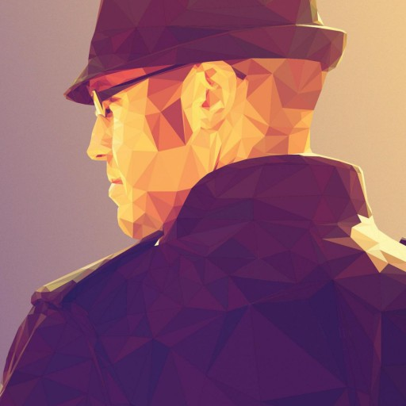

Meet the Techrangers®
Ian Turgeon
Degree:
Digital Media B.A.
Applied Computer Science minor
Expertise:
- Front End: HTML, CSS, JavaScript, w/ Angular, React, and Backbone
- Back End: PHP, Ruby, Python, and JavaScript
- Graphics: Photoshop and Illustrator
- DevOps: AWS, Jenkins, Git, and lots of Linux
Biography:
I grew up in 6 cities in 5 different states across the U.S. In my diverse experiences I picked up an insatiable drive to build and create things. Dismantling toys and building new PC's, I grew to love tinkering with mechanical objects and learning how complex systems work.
I fondly remember playing Contra and Tecmo Bowl with my best friends, thinking how cool it would be to actually make games. At the same time, I developed a strong appreciation of the aesthetics of art and music through years of playing in several bands and creating my own art.
I began my UCF career as a student seeking a combination of these pursuits. Digital Media was the best place to meld art, and computer science together. While in school, I informally started a web development company to build various sites and shopping carts for friends and members of the international automotive community I belong to. This company would later grow to be a legitimate LLC where I and my partners would build numerous side projects.
As a freshman, I joined The Center for Distributed Learning (then named Course Development & Web Services) as a part-time Techranger. The newness quickly wore off as the Techrangers® mostly converted text to HTML at that time. I jumped at the chance to join a brand new team named New Media.
New Media pursued building new, enticing software interfaces and experiences. We built games for courses, applications to manage those games, UCF's virtual tour, and UCF's campus map. To scale the effectiveness of our work, we started building systems to enable UCF faculty to customize and build their own content. That project started as "GameServ", later renamed to "Kogneato", and finally our current (and trademarked) name: Materia.
After graduation I joined New Media as a full time software developer and continued to mature along with the team. Our culture, technology, and of course, the software became more and more polished. In 2016, we merged all software development at CDL back into one team; Learning Systems & Technologies. This team is now the home of the Techrangers®, brining me back to my beginnings.
Now, I'm a Senior Developer, working with a very diverse team of developers and playing with all sorts of cool tech. The Techrangers® have never been better, and we're always striving to make this the best place in Orlando to start a software development career. I love it.
Page last updated November 30th, 2016